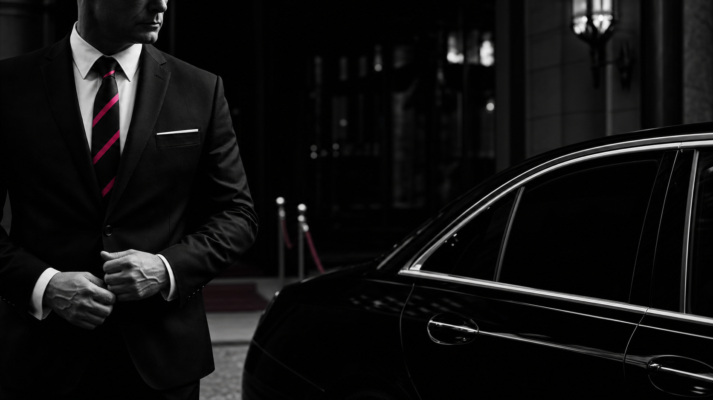

Nuestra forma de estar
No transportamos personas.
Acompañamos personas.
La excelencia no está solo en el vehículo. Está en anticiparse, comprender el contexto y hacer que todo suceda con naturalidad.
Descubrir los servicios →
Los 5 principios
El servicio se reconoce en los detalles.
Una relación de confianza